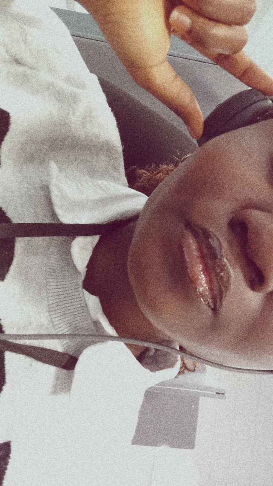

My Journey
A little about how I found my way into technology, design, and development.
01 - Humble Beginnings
I came into the digital world through humble beginnings — watching movies and sneaking onto my dad’s laptop whenever he wasn’t paying attention. I didn’t know anything about design or development back then, but I was fascinated by how people created the digital experiences I saw on screen. That curiosity pushed me to explore, click around, break things, fix them, and slowly understand the tools behind the magic.
Along the way, I discovered something important about myself: I’m naturally curious, patient, and willing to learn through trial and error. Every project teaches me something new, not just about design but about how I think, solve problems, and grow. Now I’m building my skills intentionally, turning those early moments of wonder into a real path in the digital space.
02 - Why UX?
I chose UX because I care about how people feel when they interact with technology. I’ve been that person clicking around, confused, frustrated, and wondering why something so simple felt so difficult. They made me realise that good design isn’t just about visuals or features — it’s about reducing stress, removing friction, and making someone’s day a little easier.
UX gives me the chance to turn empathy into design. I want to create digital experiences that feel helpful, calm, and human, not cold or overly technical. When something just makes sense, when it guides you without overwhelming you, that’s the kind of design I want to build. It’s my way of making tech feel more like support and less like a barrier.
03 - Outside of Tech
Outside of tech, I’m drawn to the things that make life feel grounded — conversations, stories, films, and the small moments that remind you there’s more to the world than interfaces. I pay attention to how people think, feel, and move through their day, and those observations shape the way I design just as much as any technical skill. Anything that feels calm, intentional, or meaningful inspires me, and I try to bring that same energy into my digital work so it feels human, not just functional.
